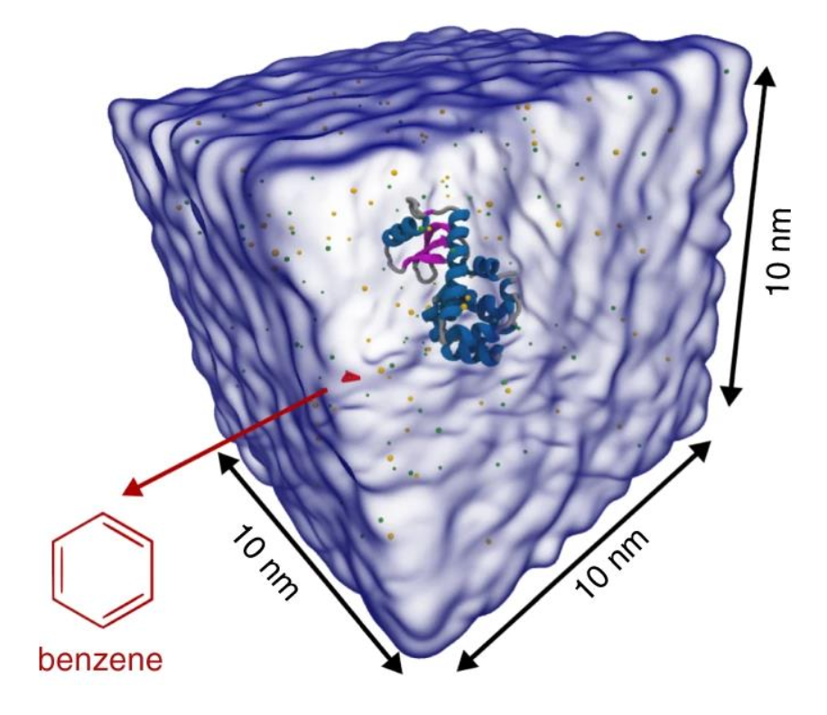
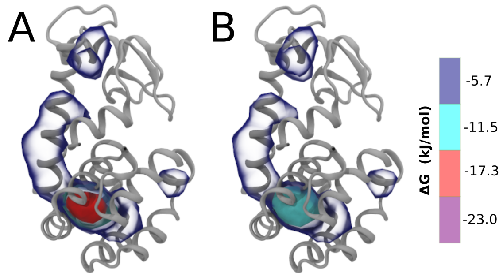

Protein-small molecule binding
In case of issues, please contact paulo.telles-de-souza@ibcp.fr.
Summary
Introduction
In this tutorial, we will set up a coarse-grained (CG) simulation for a protein–ligand system using the new Martini 3.0 force field. The ligand will be initially placed in the solvent phase of the system, and throughout the simulation find the protein binding pocket. As an example, we will simulate the binding of benzene to different mutants of T4 lysozyme[1-3]. You can find all necessary files to perform the simulations here. The same system was already simulated before[4,5] with Martini 2 and with the open-beta version of Martini 3.
1. Converting an atomistic structure -protein and ligand- to CG resolution and generating a Martini topology
In case you already worked with the Martini 3 Proteins tutorial part I, please go to step 2 of this tutorial using the previous T4 lysozyme CG model you generated with the elastic network approach. If you just landed here, it might be a good idea to familiarize yourself with the different protein models in the Martini force field. But you can also continue the current tutorial, because in the following we briefly explain how to generate a Martini 3 Protein CG model with martinize2.
1A. Download the crystal structure of the L99A T4 lysozyme from the Protein Data Bank (PDB code 181L):
wget http://www.rcsb.org/pdb/files/181L.pdbAlternatively, you can visit the PDB website (https://www.rcsb.org/), search for the structure, and click on Download Files. Note that the downloaded PDB file contains not only protein residues but also three additional molecules: water (HOH), benzene (BNZ), and 2-hydroxyethyl disulfide (HED). You should delete them prior to generating the CG structure which can be done using the following command:
grep "^ATOM" 181L.pdb > 181L_clean.pdb1B. Generate Martini topology and coordinates:
The clean atomistic structure of T4 lysozyme can be used now as input for martinize2 to produce both the coordinates (181L-CG.pdb) and topology (t4l_only.top) of the CG model.
martinize2 -f 181L_clean.pdb -o t4l_only.top -x t4l_cg.pdb -dssp /path/to/dssp -p backbone -ff martini3001 -elastic -ef 700.0 -el 0.5 -eu 0.9 -ea 0 -ep 0 -scfix -cys autoHere we are using the version 3001 of the protein model in Martini 3 force field (-ff). An easy way of determining the secondary structure of each residue in the protein is by using the DSSP program. Do not forget to add the path to dssp in case is not executable from everywhere in your terminal (-dssp /path/to/dssp). The folded structure of T4 lysozyme is stabilized with an elastic network[6]. The magnitude of the elastic force constant can be specified with –ef while lower and upper cutoffs can be defined by –el and –eu, respectively. A force constant of \(700–900 kJ/(mol*nm^2)\) is suitable in most of the cases. Generalized side chain corrections[7] (-scfix) and possible cysteine bridges (-cys auto) should also be part of your default options for an initial Martini 3 protein model. In case you do not have dssp installed in your machine, you can replace the /path/to/dssp by -ss. In this case, you need to provide the 1-letter code with the secondary structure (-ss CCHHHHHHHHHCCEEEEEECTTSCEEEETTEEEESSSCHHHHHHHHHHHHTSCCTTBCCHHHHHHHHHHHHHHHHHHHHHCTTTHHHHHHSCHHHHHHHHHHHHHHHHHHHHTCHHHHHHHHTTCHHHHHHHHHSSHHHHHSHHHHHHHHHHHHHSSSGGGC).
2. Placing the protein in a simulation cell, adding water, ions and ligand, and running the simulation
2A. Solvate the protein:
Since we now have both the coordinates and topology of the Martini 3 protein, we can put the protein in a simulation cell, and add water and ions. We will use for this task insane[8], which is usually used to build systems containing lipid bilayers, but it can also be used for proteins in water solution.
python2 insane.py -f t4l_cg.pdb -o CG.gro -p CG.top -pbc cubic -box 10,10,10 -salt 0.15 -sol W -d 0You can look for more details about the insane.py script here. The output file (CG.gro) contains NA+, CL-, and W residues while CG.top is a prototype of the master topology file. You can remove the charge signs of NA and CL in the CG.top file. You should also replace “Protein” by molecule_0. You may get a list of molecules which is similar to:
[ molecules ]
; name number
molecule_0 1
W 8846
NA 93
CL 101Don’t forget to also include the Martini 3 force field files at the beginning of the CG.top.
#include "martini_v3.0.0.itp"
#include "molecule_0.itp"
#include "martini_v3.0.0_ions_v1.itp"
#include "martini_v3.0.0_solvents_v1.itp"The first .itp file contains information about non-bonded interactions between all types of Martini 3 beads. The other files are more specific and define standard Martini 3 ions, protein (molecule_0.itp, generated in the martinize2 step) and solvents.
2B. Add the ligand to the simulation box:
The crystal structure downloaded from the PDB website contains a benzene molecule crystalized in the binding site. We want to see if a CG model of benzene is capable of correctly finding the binding site of T4 lysozyme and bind to it in a pose that resembles the crystallographic binding mode. The Martini 3 topology of benzene is already provided in martini_v3.0.0_small_molecules_v1.itp. Martini 3 benzene consists of three equidistant beads of type TC5, bonded together by constraints of length 0.290 nm. Make a copy of CG.gro, rename it to CG_benzene.gro and open it in a text editor. At the end of the file (just before the cell length), add the coordinates of the ligand from the file benzene.gro. Don’t forget to update the total number of atoms in the second line of the CG_benzene.gro file. You should try to place the benzene molecule in the solvent part of the simulation box. Don’t worry too much about the exact ligand coordinates; they will be adjusted in the minimization phase. Just try to place the ligand in a reasonable spot. The final CG.top file should look like this:
#include "martini_v3.0.0.itp"
#include "molecule_0.itp"
#include "martini_v3.0.0_ions_v1.itp"
#include "martini_v3.0.0_solvents_v1.itp"
#include "martini_v3.0.0_small_molecules_v1.itp"
[ molecules ]
; name number
molecule_0 1
W 8846
NA 93
CL 101
BENZ 1A representation of the simulation box is shown in Fig. 1.

2C. Now, start the minimization, equilibration and production! You can find examples of .mdp files here or in the folder you downloaded at the beginning of the tutorial. Do not forget to create the restraint.gro based on the starting configuration (as you are using position restraints for minimization and equilibration in the .mdp files).
gmx grompp -p CG.top -f min.mdp -c CG_benzene.gro -maxwarn 1 -r CG_benzene.grogmx mdrun -v -c CG-em.grogmx grompp -p CG.top -f eq.mdp -c CG-em.gro -maxwarn 1 -r CG_benzene.grogmx mdrun -v -c CG-eq.gro -x traj_comp-eq.xtcgmx grompp -p CG.top -f md.mdp -c CG-eq.gro -maxwarn 5gmx mdrun -v -c CG-md.gro -x traj_comp.xtcAs the system is not so big, you maybe have some domain decomposition issues (depending on the number of CPU/threads available on your computer). In these cases, you can reduce the used number of threads by specifying your desired number of threads using the flag -nt in the gmx mdrun. More information about Martini 3 simulations can be found in the lipid and protein tutorials.
3. Analyzing the trajectory
Once the simulation has finished, a trajectory (traj_comp.xtc) should have been generated. An RMS alignment of the protein will take care of the rotational and translational motion.
gmx trjconv -pbc mol -center -ur compact -s topol.tpr -f traj_comp.xtc -o temp.xtc To do the alignment, an index file containing the list of backbone atoms (BB) must be provided. It can be generated with:
gmx make_ndx -f CG-eq.gro << EOF
a BB
q
EOFNow, you can use the new index.ndx file to perform the aligment with gmx trjconv:
gmx trjconv -fit rot+trans -s topol.tpr -f temp.xtc -o trajfitted.xtc -n index.ndxYou can visualize the trajectory in VMD[9]. More information on visualizing CG Martini simulations is provided here or in the Martini 3 Protein Tutorial – part 1.
vmd CG-eq.gro trajfitted.xtcDo you see any binding events taking place? If not, you may consider increasing the total simulation time or even using multiple simulation replicas. Take a look at the study already published using Martini 3 open beta for more details[5]. In some cases, not seeing binding events can indicate a problem in the ligand model. Some tests can be performed to check this possibility, in particular for systems for which you know the ligand binding site of your protein. For instance, you could perform a simulation with the ligand already docket in the expected pocket. As the crystal structure used in this tutorial (PDB code 181L) already had benzene docked in L99A T4 lysozyme, you could simply map the CG model of benzene using the atomistic structure of benzene from this structure (look the Parametrization of a new small molecule tutorial for more details). Then, you could simply use the coordinates of the mapped beads in the step 2D of this tutorial and repeat step 2C. If the ligand stays stable in the pocket for a reasonable time, it would be an indication that the ligand parameters are reasonable.
Finally, after getting enough sampling of binding and unbinding events and performing the alignment steps described above, the occupancy of the benzene molecule across the trajectory can be calculated by issuing the following commands in VMD:
set sel0 [atomselect 0 "resname BENZ"]$sel0 set radius 1.9volmap occupancy atomselect0 -res 1.0 -allframes -combine avg -o volmap_out.dxIn the first line, the benzene molecule is selected from your system. In the second line, you redefine the VdW radius of the benzene CG model, as VMD has only reasonable radius values for atomistic systems. Finally, you use the volmap plugin to compute the occupancy. In very long trajectories/sampling, it maybe be useful to run this analysis without the VMD graphical interface (see VMD documentation for more information).
After the analysis is done (it can take some time), load the generated file (volmap_out.dx) in VMD. This can be done follwing this procedure: click "File" → "New Molecule" → "Browse", select "volmap_out.dx" and click "Load"). After loading the volmap_out.dx, you can change its the representation to isosurface. To change representation: on VMD window, click "Graphics → Representations" →"Drawing method" → "Isosurface". In the "Isosurface", you can select in "Show" and "Draw" the style of this specific representation. The “isovalue” control allows you to adjust the displayed occupancy threshold. Which regions of the protein have the highest occupancy? Is the known binding site / binding tunnel among them?
For this particular system, we obtained around 2-9 binding events per 30 μs of simulation time[5]. If you run the simulation long enough so that several binding events are observed, the \(k_{on}\) of benzene – T4 lysozyme can be calculated as follows:
\[ k_{on} = \frac{\frac{number\;of\;binding\;events}{simulation\;time}}{[concentration]} \]
4. Generating mutants and repeating the procedure
In this final bonus step, we present a simple procedure on how to generate Martini 3 CG models of mutations using martinize2. For instance, the wild-type T4 lysozyme is known to not have a cavity where benzene could bind with high affinity. So, you could now reverse the mutation L99A of the crystal structure used in this tutorial. This can be done directly in martinize2, using the flag -mutate.
martinize2 -f 181L_clean.pdb -o single-t4l.top -x 181L-CG.pdb -dssp /path/to/dssp -p backbone -ff martini3001 -elastic -ef 700.0 -el 0.5 -eu 0.9 -ea 0 -ep 0 -scfix -cys auto -mutate A-ALA99:LEUAnother option that could be tested is the double mutation L99A/M102Q of T4 lysozyme3. This system is known to have reduced affinity to benzene as well. In the hypothetical situation where you started with the T4 lysozyme wild-type (PDB code 4S0W), you could generate this double mutant simply using:
wget http://www.rcsb.org/pdb/files/4S0W.pdbgrep "^ATOM" 4S0W.pdb > 4S0W_clean.pdbmartinize2 -f 4S0W_clean.pdb -o single-t4l.top -x 4S0W-CG.pdb -dssp /path/to/dssp -p backbone -ff martini3001 -elastic -ef 700.0 -el 0.5 -eu 0.9 -ea 0 -ep 0 -scfix -cys auto -mutate A-LEU99:ALA -mutate A-MET102:GLNBe aware that the 4S0W structure has two T4 lysozyme chains and also some residues have double conformation. In such situations, you must carefully consider which chain and residue conformation martinize will take into account. In addition, the structure deposited has hydrogen atoms and also some ions and small-molecules (typically used in the crystalization of the protein). You can consider clean your .pdb before martinizing the structure or used the -maxwarn flag. After generating the new CG models, repeat steps 2 and 3 of the tutorial. To illustrate the results that you could get with enough sampling, we present the occupancy maps of benzene observed for L99A and L99A/M102Q mutants of T4 lysozyme in Fig. 2. It is worth mentioning that this procedure is recommended only in situations for which you would not expect large conformational changes in the mutated structure in relation to the one given to martinize2 as reference. As Martini 3 protein models have bonded terms which depends of the reference structure, it usually is better to use experimental structures (as PDB codes 1LGU or 1LI3 for the double mutant L99A/M102Q or 4S0W for the wild-type). In case the mutants are not available, another option would be to generate the mutation using programs such as pymol, modeller, or VMD and/or relax a bit the structures with atomistic simulations.

Tools and scripts used in this tutorial
GROMACS(http://www.gromacs.org/)martinize2(https://github.com/marrink-lab/vermouth-martinize)insane(downloadable here)
References
[1] Eriksson, A. E.; Baase, W. A.; Wozniak, J. A.; Matthews, B. W. A Cavity-Containing Mutant of T4 Lysozyme Is Stabilized by Buried Benzene. Nature 1992, 355 (6358), 371–373. https://doi.org/10.1038/355371a0.
[2] Morton, A.; Matthews, B. W. Specificity of Ligand Binding in a Buried Nonpolar Cavity of T4 Lysozyme: Linkage of Dynamics and Structural Plasticity. Biochemistry 1995, 34 (27), 8576–8588. https://doi.org/10.1021/bi00027a007.
[3] Liu, L.; Baase, W. A.; Michael, M. M.; Matthews, B. W. Use of Stabilizing Mutations to Engineer a Charged Group within a Ligand-Binding Hydrophobic Cavity in T4 Lysozyme. Biochemistry 2009, 48 (37), 8842–8851. https://doi.org/10.1021/bi900685j.
[4] Dandekar, B. R.; Mondal, J. Capturing Protein–Ligand Recognition Pathways in Coarse-Grained Simulation. J. Phys. Chem. Lett. 2020, 11 (13), 5302–5311. https://doi.org/10.1021/ACS.JPCLETT.0C01683.
[5] Souza, P. C. T.; Thallmair, S.; Conflitti, P.; Ramírez-Palacios, C.; Alessandri, R.; Raniolo, S.; Limongelli, V.; Marrink, S. J. Protein–Ligand Binding with the Coarse-Grained Martini Model. Nat. Commun. 2020, 11, 3714. https://doi.org/10.1038/s41467-020-17437-5.
[6] Periole, X.; Cavalli, M.; Marrink, S.-J.; Ceruso, M. A. Combining an Elastic Network With a Coarse-Grained Molecular Force Field: Structure, Dynamics, and Intermolecular Recognition. J. Chem. Theory Comput. 2009, 5 (9), 2531–2543. https://doi.org/10.1021/ct9002114.
[7] Herzog, F. A.; Braun, L.; Schoen, I.; Vogel, V. Improved Side Chain Dynamics in MARTINI Simulations of Protein–Lipid Interfaces. J. Chem. Theory Comput. 2016, 12 (5), 2446–2458. https://doi.org/10.1021/acs.jctc.6b00122.
[8] Wassenaar, T. A.; Ingólfsson, H. I.; Böckmann, R. A.; Tieleman, D. P.; Marrink, S. J. Computational Lipidomics with Insane : A Versatile Tool for Generating Custom Membranes for Molecular Simulations. J. Chem. Theory Comput. 2015, 11 (5), 2144–2155. https://doi.org/10.1021/acs.jctc.5b00209.
[9] Humphrey, W.; Dalke, A.; Schulten, K. VMD: Visual Molecular Dynamics. J. Mol. Graph. 1996, 14 (1), 33–38. https://doi.org/10.1016/0263-7855(96)00018-5.